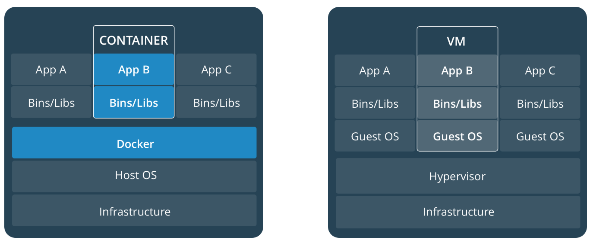

마이크로서비스 Microservices (6) 배포 전략
마이크로서비스 배포 전략
모놀리식 애플리케이션은 통째로 배포되기 때문에 애플리케이션 복사본을 여러 개 실행하는 형식으로 배포합니다. 따라서 N개의 서버에 M개의 애플리케이션 인스턴스가 실행됩니다. 마이크로서비스 배포에 비하면 단순하죠.
마이크로서비스 애플리케이션은 수십에서 수백 개의 서비스로 이루어져 있습니다. 각 서비스는 다양한 언어와 프레임워크로 만들어져있고 각 서비스는 독립적으로 배포, 스케일링, 모니터링 되고 각자의 리소스를 사용합니다. 각 서비스가 하나의 작은 애플리케이션이라고 볼 수 있습니다.
이런 마이크로서비스 애플리케이션을 어떻게 하면 빠르고 안정적이면서 비용효율적으로 배포할 수 있을까요?
호스트 하나에 여러 개의 서비스 배포
첫 번째 방법은 (물리적 또는 가상의)호스트 하나에 서비스를 여러 개 배포하는 패턴입니다. 가장 쉽게 생각해볼 수 있는 방법이죠. 각 호스트는 고정적이기 때문에 네트워크 정보를 알고 있는 상태입니다.

이런 구조에서는 각 서비스 인스턴스가 하나의 프로세스로서 같은 같은 호스트의 자원을 공유할 수 있습니다. 예를 들어 여러 웹 애플리케이션이 같은 Apache Tomcat 서버와 JVM 을 공유할 수 있어 자원을 효율적으로 사용할 수 있습니다. 그리고 쉽고 빠르게 배포할 수 있습니다. 자바의 경우 JAR 나 WAR 파일을 복사하기만 하면 되고 Node.js 나 Ruby 의 경우 소스 코드를 복사하기만 하면 됩니다. 실행 또한 간단합니다.
이렇게 하나로 묶여있는 것은 양날의 검입니다. 각 서비스 인스턴스는 프로세스로 분리되어있다 하더라도 완전히 분리시킬 수는 없습니다. 각 서비스 별로 자원을 제한할 수 없기 때문에 특정 서비스가 CPU나 메모리 등 자원을 많이 소비한다면 다른 서비스에 영향을 주게 됩니다.
운영 측면에서 보자면 하나의 운영팀이 서버를 관리하기 때문에 각 서비스 별로 다른 배포 방법을 모두 알고 있어야 합니다. 이런 복잡함 때문에 배포 중 에러가 발생할 확률이 높습니다.
호스트마다 서비스 하나씩 배포
두 번째 방법은 호스트마다 서비스를 하나씩만 배포하는 패턴입니다. 호스트를 분리시켜서 각 서비스를 분리해놓은 방식입니다. 이 호스트를 가상 머신(Virtual Machine, VM)과 컨테이너(Container)에 따라 나눠 살펴보겠습니다.
가상 머신 기반
각 서비스는 VM 이미지로 패키징 되고 이 VM 이미지를 이용해서 VM 상에서 동작하는 서비스 인스턴스를 배포합니다. 예를 들어 AMI(Amazon Machine Image)를 이용해 서비스 인스턴스가 실행되는 EC2 인스턴스를 생성하는 식이죠.

이 방식은 Netflix 가 스트리밍 서비스를 배포하는 방식이기도 합니다. 각 서비스를 Aminator 를 이용해서 EC2 AMI 로 패키징해서 각 서비스는 EC2 인스턴스 위에서 동작하게 됩니다.
이런 툴을 사용하면 자신만의 VM 을 쉽게 만들 수 있습니다. Jenkins 같은 CI(Continuous Integration) 서버에서 빌드 과정에 Animator 를 포함시켜서 서비스를 EC2 AMI 로 패키징할 수도 있습니다. Packer.io 는 Animator 와 달리 EC2 뿐만 아니라 DigitalOcean, VirtualBox, VMware 같은 다양한 가상화 기술을 지원합니다. 자바 애플리케이션이라면 Boxfuse 를 고려해볼 수도 있습니다.
호스트에 여러 서비스를 배포하던 방식과 달리 각 서비스가 호스트별로 나뉘어져 캡슐화되었습니다. 자원을 따로 쓰기 때문에 한 서비스가 자원을 많이 먹어도 다른 서비스에 영향이 없습니다. 그리고 마이크로서비스는 클라우드 환경과 아주 잘 맞는데다가 AWS 같은 클라우드에서 제공하는 유용한 기능(로드밸런싱, 오토스케일링)을 사용할 수 있습니다. VM 이미지를 이용해서 블랙박스처럼 배포하기 때문에 훨씬 더 간단하고 안정적으로 배포할 수 있습니다.
하지만 VM 자체가 가지는 한계가 있습니다. VM 은 운영체제를 포함하고 있는데, 이 때문에 이미지 크기도 커지고 실행 시간도 더 소요됩니다. 시작 시 운영 체제를 시작하는 시간도 필요합니다. 그리고 IaaS 에서 제공하는 VM 은 크기가 고정되어 있어 유연하게 사용하기 어렵습니다. 따라서 오토스케일링 시 시간도 더 소요되고 자원 활용의 효율성도 떨어집니다.
컨테이너 기반
VM 대신 각 서비스를 컨테이너에 올리는 방식입니다. 컨테이너는 운영 체제 수준 가상화(operating-system-level virtualization) 방식으로 운영체제 커널을 공유합니다. 따라서 각자 OS 를 가지고 있는 VM 과 달리 하나의 OS 에 여러 컨테이너가 올라가게 되므로 크기도 작고 리소스를 훨씬 적게 사용합니다. 컨테이너는 프로세스를 묶어서 샌드박스 형태로 제공하고 각자의 포트 네임스페이스와 파일 시스템을 가지고 있습니다. 컨테이너 별로 메모리와 CPU 등 리소스를 제한할 수도 있죠. 대표적으로는 Docker 가 있습니다.

서비스를 컨테이너 이미지로 패키징해서 하나의 호스트 안에 여러 컨테이너를 실행할 수 있습니다. 그리고 Kubernetes 같은 클러스터 매니저를 이용해 컨테이너를 관리할 수 있습니다.

컨테이너를 사용하면 VM 의 장점을 활용하면서 단점을 보완할 수 있습니다. VM 에 비해 빠르고 경량화된 기술로 컨테이너 이미지는 매우 빠르게 빌드되고 OS 부팅 없이 빠르게 실행됩니다. 하지만 OS 커널을 공유하기 때문에 안전하지 않은 단점이 있습니다.
서버리스 배포
서버리스 배포(Serverless Deployment) 방식은 VM 이나 컨테이너와는 또 다른 방식입니다. AWS Lambda 가 대표적인 예인데요. 마이크로서비스를 배포하기 위해서는 각 서비스를 패키징한 압축파일(ZIP)을 메타 데이터와 함께 AWS Lambda 에 업로드만 하면 됩니다. 서버리스는 실제 서버가 없는 것은 아니지만 서버, VM, 컨테이너 등에 대해서 고민하지 않고 애플리케이션 개발에 집중할 수 있어서 서버가 없다(serverless)라고 표현합니다. 그리고 시간과 메모리, 네트워크 등 사용량에 따라 비용을 지불합니다.
여기서 각 서비스는 람다 함수(Lambda function)가 됩니다. 람다 함수는 상태를 저장하지 않는(stateless) 서비스로 몇 가지 요청이 있을 때 실행됩니다.
- 웹 서비스 요청을 이용해 직접 실행
- 다른 AWS 서비스(S3, DynamoDB, SES 등)에서 발생하는 요청에 의해 자동 실행(이벤트처럼).
- API 게이트웨이가 HTTP 요청을 받아서 해당 람다함수를 자동으로 실행
- 스케줄러를 이용해 주기적으로 실행
마이크로서비스를 배포하기 편리하고 좋은 방법이지만 각 서비스가 상태를 저장할 수 없다는 점에 주의해야 합니다. 요청이 있을 때마다 별도의 인스턴스가 실행되는 방식이죠. 써드파티 메시지 브로커에서 메시지를 받는 방식과는 맞지 않고 AWS Lambda 에서 지원하는 언어만 사용해야 하는 것도 제약사항입니다. 마지막으로 각 서비스는 작은 단위로 빠르게 실행되지 않으면 타임 아웃으로 종료되니 주의해야 합니다.